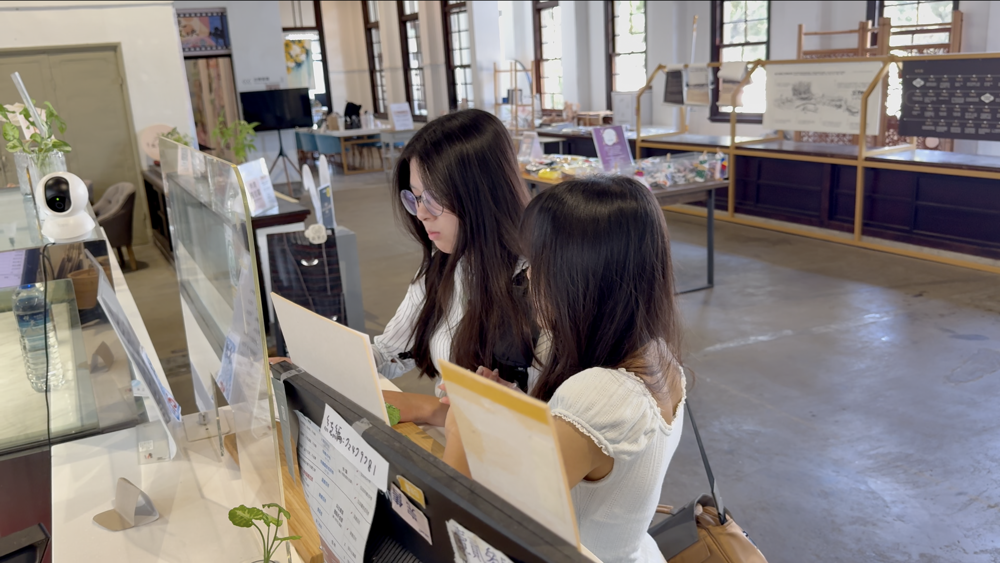

一、專題與劇情簡介
在快節奏的都市生活中，你是否也常面臨靈感枯竭的焦慮？本專題《都市綠洲》為逢甲行銷系 甲五「半畝方糖」的大二年度影展作品。 我們將帝國製糖廠比喻為一座蘊藏驚喜的「靈感礦坑」，試圖捕捉歷史建物與現代都市交織出的獨特氛圍。
【劇情大綱】
面臨畢製劇本截止期限的 A，因長時間困在電腦前而感到焦慮。好友 B 得知後，邀請 A 前往自己口中的「靈感礦坑」——帝國糖廠。
在 B 的帶領下，A 發現這裡不僅有歷史建築，還有展覽、餐飲與星泉湖畔。兩人在草地上放慢腳步，A 也重新找回了創作靈感，
明白這裡是一個能讓人在繁忙城市中重新找到呼吸的都市綠洲。
拍攝地點：台中市東區樂業路 30 號（帝國製糖廠臺中營業所）。
目標客群：需要短時間微休憩、尋找靈感的 18-25 歲年輕族群。
二、製作亮點與幕後企劃
專題企劃的三個特色
- 跨國音樂授權：我們特別向國際 YouTube 創作者聯繫，成功取得《Soft Spot》吉他 cover 授權，作為貫穿短片的靈魂配樂。
- 行銷提案展演：期中簡報時，「半畝方糖」的成員特別設計了「分析師」角色，身穿正式西裝與高跟鞋，用專業架構將感性影像轉化為具說服力的行銷企劃。
- 全自製後期剪輯：從前期腳本發想到後期使用 CapCut 進行影片剪輯與調色，全由團隊親力親為。
企劃發展順序
本專題的誕生經歷了以下幾個重要階段：
- 選定台中帝國製糖廠為核心場域，進行實地勘景與動線規劃。
- 撰寫腳本並討論行銷切角，將「都市綠洲」的概念具象化。
- 進行影像拍攝與配樂授權洽談。
- 完成剪輯，並進行期中提案的分析師角色排練。
三、場景與敘事對照表
| 拍攝場景 | 影像呈現重點 | 行銷與敘事意涵 |
|---|---|---|
| 歷史建築帝國製糖廠內部 | 日治時期折衷主義風格、斑駁的光影 | 象徵時間的沉澱與舊城區的歷史底蘊 |
| 星泉湖畔與水面倒影 | 親水生態、廣闊的視覺延伸 | 呈現「綠洲」的具象概念，提供都市人喘息的視覺空間 |
| 湧泉公園環湖步道 | 現代植栽與鐵道遺構的結合 | 歷史與現代交融，傳遞永續發展與空間再生的行銷價值 |
四、專題劇照與場景

五、影展預告片：《都市綠洲》
點擊下方影片，觀賞我們精心製作的影展預告片，搭配獨家授權的《Soft Spot》配樂，感受帝國糖廠的魅力。
若播放器無法播放，請 在 YouTube 觀看《都市綠洲》預告片（另開分頁）
六、位置地圖：找到都市綠洲
影片拍攝地圖位於臺中市東區泉源里樂業路30號，歡迎大家在看完發表後親自走訪。
七、資料與素材來源
本網站為逢甲行銷系大二專題網站設計練習，相關素材來源如下：
網站最後更新日期：2026 年 11 月 11 日。